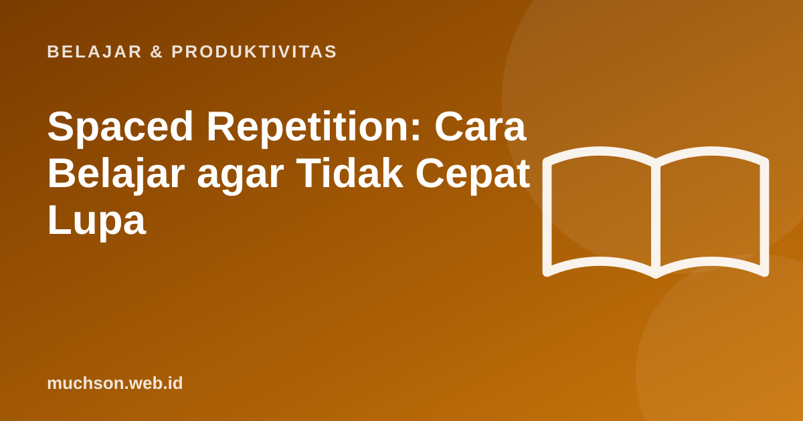

Beranda › Artikel › Belajar & Produktivitas
Belajar & ProduktivitasSpaced Repetition: Cara Belajar agar Tidak Cepat Lupa
Anda belajar semalaman sebelum ujian, lalu seminggu kemudian lupa sebagian besar. Itu normal dan bisa dijelaskan. Kabar baiknya, ada cara belajar yang memanfaatkan sifat lupa itu: mengulang tepat ketika ingatan mulai memudar.

Kurva lupa
Penelitian sejak abad ke-19, dipelopori Hermann Ebbinghaus, menunjukkan bahwa ingatan baru memudar cepat di awal, lalu melambat. Tiap kali Anda mengingat kembali sesuatu, ingatan itu menjadi lebih kuat dan memudar lebih lambat. Itulah dasar pengulangan berjarak: mengulang pada jeda yang makin panjang.
Jadwal ulang yang masuk akal
Cara menerapkannya
- Ubah materi menjadi pertanyaan atau kartu (satu ide per kartu).
- Uji diri: jawab dari ingatan sebelum melihat jawaban.
- Jawaban benar: jeda ulang diperpanjang. Salah: ulang lebih cepat.
- Gunakan aplikasi kartu yang menjadwalkan otomatis, atau buku catatan dengan tanggal.
- Belajar sedikit tetapi tiap hari lebih baik daripada menjejalkan sekali.
Mengulang dengan membaca ulang terasa nyaman tetapi kurang efektif. Mengingat kembali tanpa melihat (retrieval practice) memberi manfaat jauh lebih besar bagi ingatan jangka panjang.